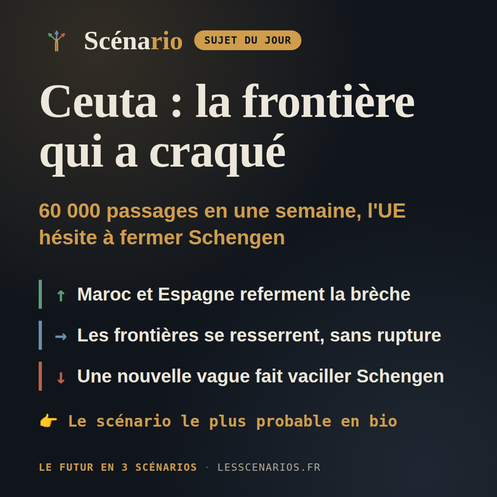
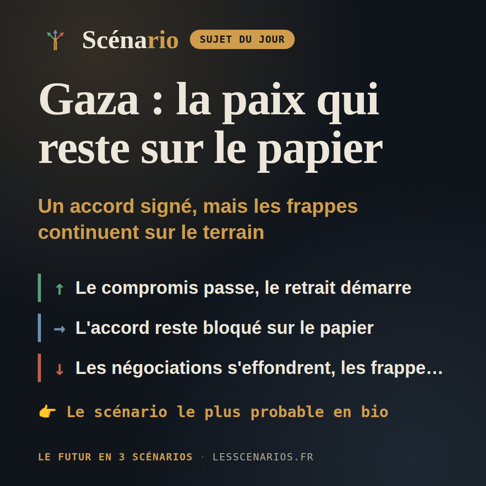
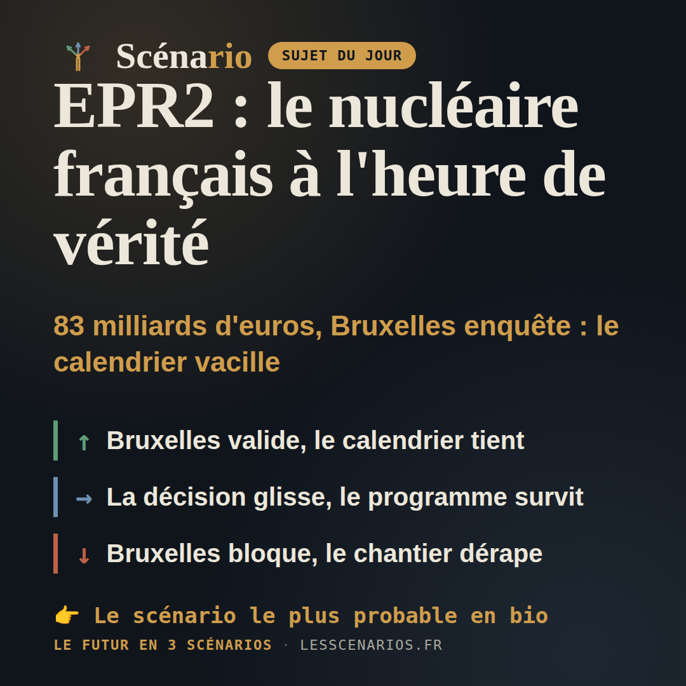
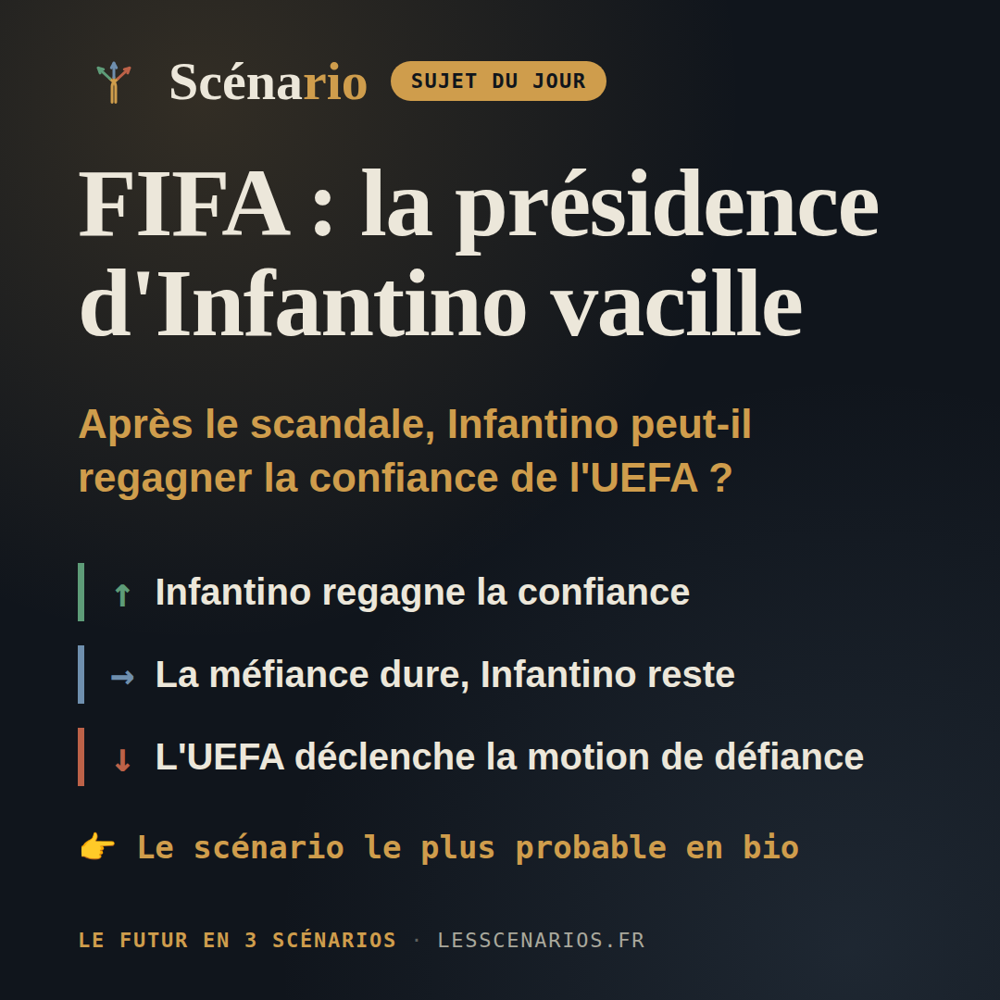
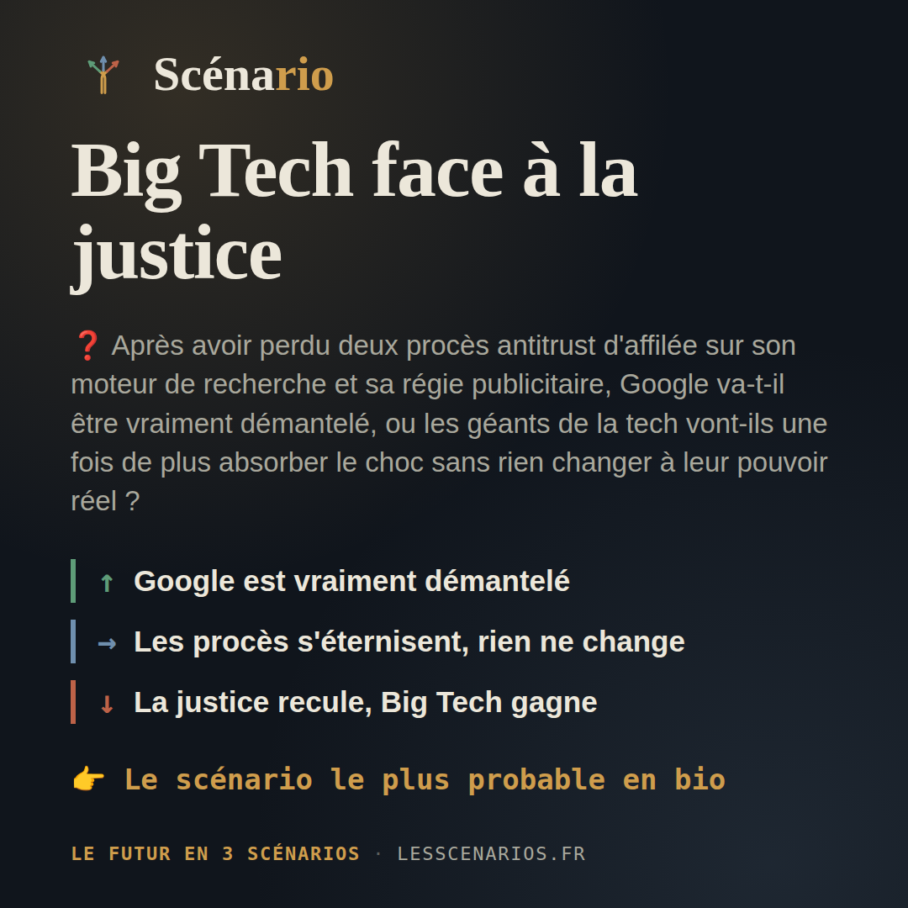
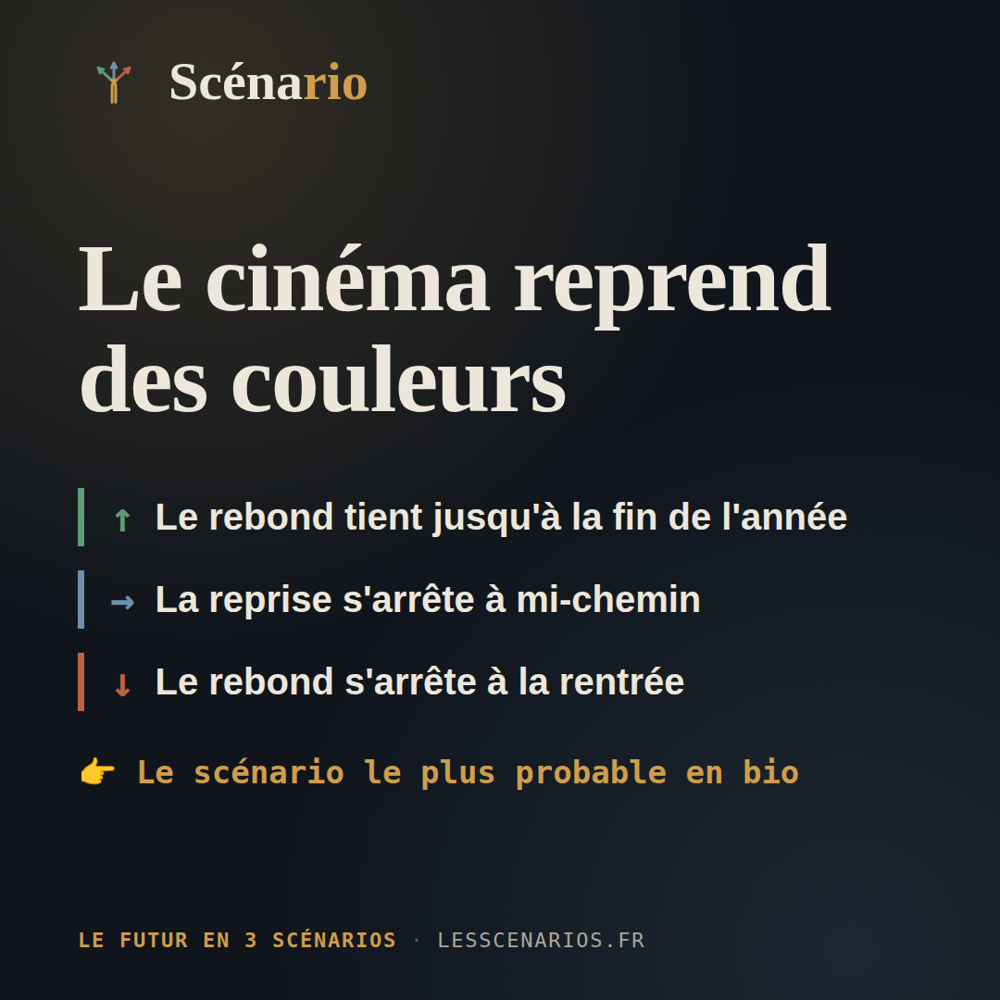
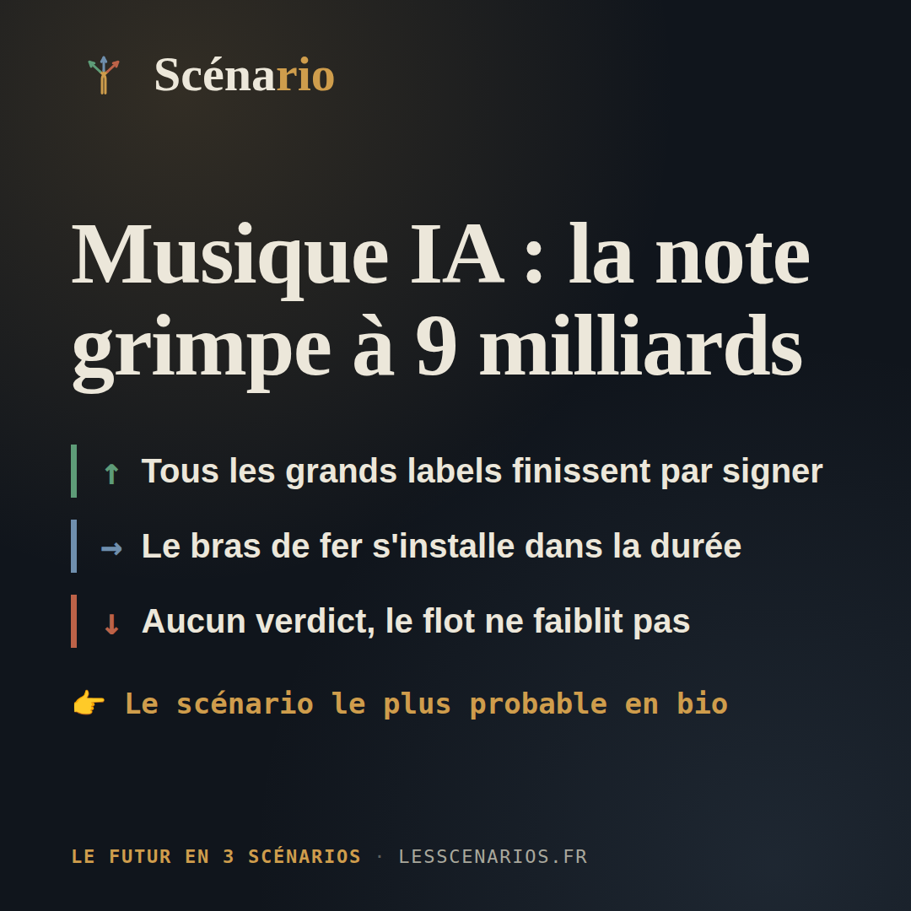

Récap hebdo
3 août au 9 août 2026 — sept sujets, sept fois trois scénarios chiffrés.
Lundi, géopolitique international

❓ Depuis jeudi, 60 000 personnes ont franchi la frontière entre le Maroc et l'enclave espagnole de Ceuta, laissant au moins 72 morts et poussant l'Italie à fermer temporairement Schengen avec l'Espagne : l'Europe va-t-elle contenir cette crise sans toucher à la libre circulation, ou Ceuta est-elle en train de rouvrir le débat sur les frontières intérieures de l'UE ?
20%Maroc et Espagne referment la brèche
50%Les frontières se resserrent, sans rupture
30%Une nouvelle vague fait vaciller Schengen
Mardi, sujet libre

❓ Après près de deux ans de guerre et au moins 73 350 morts, le Hamas a accepté le 31 juillet de rendre ses armes en échange d'un retrait israélien — mais Israël a fait savoir le 3 août avoir de « sérieuses préoccupations » et les frappes continuent : l'accord va-t-il vraiment démarrer, ou reste-t-il un accord signé sur le papier ?
20%Le compromis passe, le retrait démarre
50%L'accord reste bloqué sur le papier
30%Les négociations s'effondrent, les frappes reprennent
Mercredi, actualité française

❓ Six nouveaux réacteurs nucléaires à 83 milliards d'euros, une enquête de Bruxelles sur les aides versées à EDF, et une décision finale attendue avant la fin de l'année : le programme EPR2 va-t-il tenir son calendrier, ou est-il en train de dérailler ?
20%Bruxelles valide, le calendrier tient
50%La décision glisse, le programme survit
30%Bruxelles bloque, le chantier dérape
Jeudi, sport

❓ Après avoir dû abandonner en catastrophe son projet de vendre un bout de la Coupe du monde à des investisseurs privés, Gianni Infantino peut-il regagner la confiance de l'UEFA et des autres fédérations avant l'élection à la présidence de la FIFA prévue le 18 mars 2027 ?
20%Infantino regagne la confiance
45%La méfiance dure, Infantino reste
35%L'UEFA déclenche la motion de défiance
Vendredi, sciences

❓ Après avoir perdu deux procès antitrust d'affilée sur son moteur de recherche et sa régie publicitaire, Google va-t-il être vraiment démantelé, ou les géants de la tech vont-ils une fois de plus absorber le choc sans rien changer à leur pouvoir réel ?
20%Google est vraiment démantelé
50%Les procès s'éternisent, rien ne change
30%La justice recule, Big Tech gagne
Samedi, culture française

❓ Après une chute historique de la fréquentation en 2025 (-13,6 %, plus bas niveau depuis 1997 hors Covid), le rebond spectaculaire du début 2026 va-t-il tenir toute l'année, ou n'est-ce qu'un sursaut avant un nouveau recul ?
30%Le rebond tient jusqu'à la fin de l'année
45%La reprise s'arrête à mi-chemin
25%Le rebond s'arrête à la rentrée
Dimanche, culture internationale

❓ Alors que Sony réclame jusqu'à 9 milliards de dollars à Suno devant la justice américaine pendant qu'Universal et Warner ont préféré signer des accords de licence, et qu'une loi européenne impose depuis le 2 août l'étiquetage de toute musique générée par IA, la création musicale mondiale bascule-t-elle vers un marché sous licence, ou reste-t-elle prise entre procès interminables et flot incontrôlé ?
15%Tous les grands labels finissent par signer
55%Le bras de fer s'installe dans la durée
30%Aucun verdict, le flot ne faiblit pas
Conclusion de la semaine
Cette semaine, plusieurs dossiers avancent sans se conclure : à Ceuta, la fermeture temporaire de Schengen contient la crise migratoire sans rouvrir le débat sur les frontières intérieures de l'UE ; à Gaza, l'accord de désarmement signé fin juillet reste sur le papier après les réserves israéliennes du 3 août ; le programme nucléaire EPR2 attend toujours le feu vert de Bruxelles avant la fin de l'année ; et dans la musique, Sony réclame 9 milliards de dollars à Suno pendant qu'Universal et Warner ont choisi la voie des accords de licence. Le fil commun de la semaine : des rapports de force qui se prolongent, sans qu'aucun ne bascule franchement.